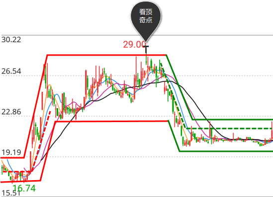
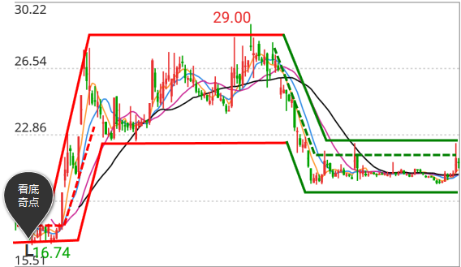

在图中两平行实线中上面一条为上边界，下面一条为下边界，实线中间区域为价值区间（详细解释见价值分析-价值区间）
在图中两平行实线中上面一条为上边界，下面一条为下边界，实线中间区域为价值区间（详细解释见价值分析-价值区间）
当价值区间受到入市资金干扰时，分析系统提示出奇点T，其干扰的结果可能是价值区间上升或价值区间不变；当价值区间不变时，奇点T就是看顶奇点。
在图中显示T点，且出现前后上边界线保持同一水平状态，是决定减仓的关键时机。

a.T点出现前后日，价值区间不变；（真实）
b.T点出现前后日，价值区间上升；
c.T点出现当日，价值区间不变；（真实）
d.T点出现当日，价值区间上升；
（T是波段操作点，在上升趋势和调整趋势中都会出现，但只有a、c是真正的看底奇点，用户要严格区分）
产生四种情况的原理及对策是：
A.入市资金激活了股票卖方，买卖力量相当，没有打开更高的上升空间。其表现为价值区间不变。所以，此时要注意见顶，及时卖出股票。
B.入市资金得到市场认同，没有激活股票卖方，打开更高的上升空间 。其表现为价值区间上升。此时要注意股价拉升，及时跟进买入。
C.入市资金仅打开一个上升空间，无法确定股票卖出方是否激活，此时要借助“能量分析”（交易活跃度衡量指标），当能量线达到能量分析的上边界时，要注意见顶，及时卖出股票，否则就持股观察，详见“能量分析”。
当价格下跌受到的抵抗动力来自增量资金时，波段分析提示“出现L点”，同时观察价值区间，如果价值区间不变，说明新增资金抗跌有效，L点就是看底奇点。
在图中显示L点，且出现前后上边界线保持同一水平状态，是决定建仓的关键时机。

a.L点出现前后日，价值区间不变；（真实）
b.L点出现前后日，价值区间下降；
c.L点出现当日，价值区间不变；（真实）
d.L点出现当日，价值区间下降。
（L是波段操作点，在下降趋势和调整趋势中都会出现，但只有a、c是真正的看底奇点，用户要严格区分）
产生四种情况的原理及对策是：
A.离市资金激活了股票买方，买卖力量相当，没有打开更低的下降空间 。其表现为价值区间不变。所以，此时要注意见底，及时买进股票。
B.离市资金得到市场认同，没有激活股票买方，打开更低的下降空间 。其表现为价值区间下降。此时要注意股价下跌，及时卖出离场。
C.离市资金仅打开一个下降空间，无法确定股票是否激活，此时要借助“能量分析”（交易活跃度衡量指标），当能量线达到能量分析的下边界时，要注意见底，逐步买进股票，否则就持币观察，详见“能量分析”。